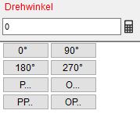

Im Zeichenmodus ohne Richtungslogik [oRiL] sowie im Bewehrungsprogramm können Sie unterschiedliche Konstruktionshilfen für das Konstruieren von Elementen nutzen.
Neben einer visuellen Unterstützung während des Zeichnens durch die Konstruktionslinien stehen Ihnen auch noch weitere praktische Funktionen zur Verfügung. Sie können zum Beispiel mit den Hilfsfunktionen Schnittpunkte bestimmen und Parallelen zeichnen. Eine weitere Konstruktionshilfe ist das Winkelraster, welches Sie bei der Eingabe von Polarkoordinaten unterstützt.
|
Hinweise: |
|
·Beachten Sie während der Eingabe von Werten die Eingabeeinheiten. Sie können die aktuellen Einstellungen in der unteren Menüleiste ablesen und in [Option | Einste → Eingabeeinheit] gegebenenfalls ändern. ·Die horizontale Ausrichtung entspricht immer dem aktuell eingestellten Systemwinkel (z. B.: Wird ein Systemwinkel von 15° eingestellt, ist die Horizontale ebenfalls um einen Winkel von 15° geneigt). Beachten Sie, dass Winkelangaben immer zum eingestellten Systemwinkel hinzugerechnet oder abgezogen werden. |


Die Konstruktionslinien sind Hilfslinien, die immer dann eingeblendet werden, wenn zwei Linien zum Schnitt gebracht werden. Sie reagieren auf alle Ihre Angaben in den Abfragen und stellen diese sofort als Vorschau auf der Zeichenoberfläche dar. Haben Sie zum Beispiel einen X-Wert eingegeben oder bestätigt, wird Ihnen durch die Konstruktionslinie sofort angezeigt, auf welcher Linie die Y-Koordinate liegen wird. Geben Sie den Y-Wert ein, wird Ihnen durch die Konstruktionslinie angezeigt, in welchem Punkt die Linie endet. Konstruktionslinien finden Sie in den meisten Funktionen, bei denen Sie X- und Y-Werte oder Referenzpunkte in der Abfrage eingeben können - zum Beispiel in den Funktionen: [Linien], [Kreise], [Verschieben], [Dehnen], [Duplizieren], [Kopieren] usw. Unterschieden wird zwischen zwei Konstruktionslinien, von denen eine der X-Eingabe und die andere der Y-Eingabe entspricht:
Siehe auch: |

Verfügbar im Zeichenmodus ohne Richtungslogik [oRiL] und im Bewehrungsprogramm. Bei der Eingabe der X- bzw. Y-Werte können Hilfsfunktionen zur Vereinfachung der Konstruktion verwendet werden. Hierdurch können auch komplexe Konstruktionen ohne die Eingabe von Hilfspunkten und Hilfslinien realisiert werden. Einzelne Werte oder Berechnungen in den Eingabefeldern werden bereits während der Eingabe durch Konstruktionslinien auf der Zeichenfläche dargestellt. Die Hilfsfunktionen lassen sich auch miteinander kombinieren. Sie können somit, je nach Bedarf, für die X- und Y- Eingabe die entsprechende Hilfsfunktion wählen. Nutzen Sie die Hilfsfunktionen auch für das Platzieren der Zeichenmarke an einem bestimmten Punkt.
Hilfsfunktionen·Winkel (w) - Linien von der Zeichenmarke aus mit einer bestimmten Neigung zeichnen. ·Schnitt (s) - Schnittpunkt zweier Linien bestimmen. An schrägen Linien zeichnen und Zeichenmarke setzen. ·Orthogonale (o) - Eine Senkrechte von der Zeichenmarke aus zu einer Bezugslinie zeichnen. ·Parallele (p) - Eine Parallele zu einer Bezugslinie zeichnen. ·Tangente (t) - Eine Tangente an einen Kreis, Teilkreis oder Bogen zeichnen. ·x-Koordinate (x) - Den X-Wert eines angeklickten Punktes übernehmen. ·y-Koordinate (y) - Den Y-Wert eines angeklickten Punktes übernehmen. ·Lotfußpunkt (l) - Einen Lotfußpunkt zu einer Bezugslinie zeichnen. Siehe auch: |

Verfügbar im Zeichenmodus ohne Richtungslogik [oRiL]. Verwenden Sie das Winkelraster, um Linien in einstellbaren Winkelschritten zu erzeugen. Haben Sie beispielsweise 90 Grad eingestellt, werden alle Linien automatisch im rechten Winkel gezeichnet ñ unabhängig davon, ob Sie die Richtung mit der Maus genau ansteuern. 1.Winkelraster einstellen und aktivieren §Klicken Sie auf In der oberen rechten Ecke der Programmoberfläche ist die Schaltfläche platziert. Klicken Sie diese an, um die Winkelraster-Eingabe zu öffnen.
Wählen Sie einen Winkel aus der Drop-Down-Liste §Drücken Sie die -Taste, um das Winkelraster zu aktivieren. [Winkel]. Sie können nun die Konstruktionslinie mit der Maus um die Zeichenmarke in dem gewählten Winkelschritt bewegen. Unter der Abfrage wird der aktuelle Winkel angezeigt. §Lassen Sie die -Taste los, wenn die Drehung erreicht ist. 2.Linie zeichnen §Führen Sie einen der folgenden Schritte aus: a)Frei zeichnen: Wenn Sie den Cursor bewegen, wird Ihnen auf der Konstruktionslinie eine Vorschau der zu zeichnenden Linie angezeigt. Sie können die Linie, wie in der Vorschau angezeigt, sofort mit einem Linksklick zeichnen, indem Sie eine freie Stelle auf der Zeichnung anklicken. b)Länge eingeben: Bestätigen Sie zunächst die Richtung mit Rechtsklick. c)Punkt fangen: Nach der Bestätigung der Richtung können auch Punkte gefangen werden. Dabei wird eine orthogonale Konstruktionslinie auf die zu zeichnende Linie gelegt. Der Schnittpunkt der Orthogonalen mit dem angeklickten Punkt bestimmt die Länge der Linie. [Länge]. Siehe auch: |

 und bestätigen Sie mit
und bestätigen Sie mit In ISBCAD werden Ihnen bei bestimmtem Funktionen Konstruktionshilfen zum genauen Ausrichten von Zeichenelementen angeboten. Diese Hilfen werden unterhalb der aktiven Abfrage eingeblendet. So können Sie z. B ein Element parallel zu einem anderen Element ausrichten, eine Winkelvorgabe wählen oder den genauen Winkel in Grad eingeben.  In Eingabefeldern mit Eingabe von Winkeln
Siehe auch: |
 können Rechenfunktionen (Grundrechenarten und Winkelfunktionen (im Bogenmaß)) ausgeführt werden. Berücksichtigt werden Klammer- und Punkt vor Strich-Regeln.
können Rechenfunktionen (Grundrechenarten und Winkelfunktionen (im Bogenmaß)) ausgeführt werden. Berücksichtigt werden Klammer- und Punkt vor Strich-Regeln.


Im Konstruktionsprogramm können Sie bei Bedarf die Differenzfunktion [Retan] einschalten. Dies ist immer dann notwendig, wenn zu Bezugslinien- und punkten Abstände eingegeben werden sollen. Im Bewehrungsprogramm wird grundsätzlich mit Differenzeingaben gearbeitet.
Siehe auch: |


Siehe auch: